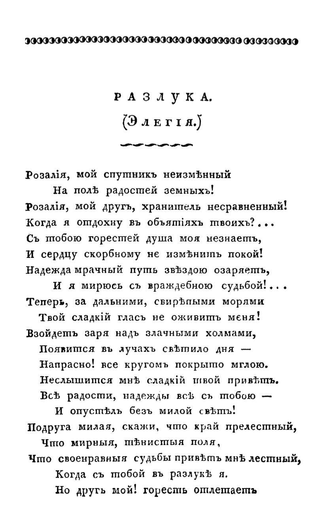
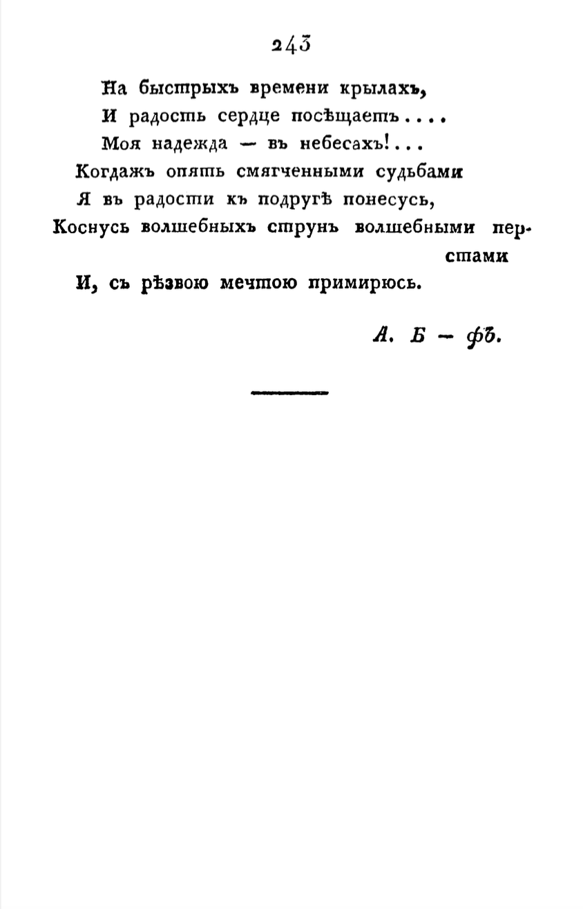
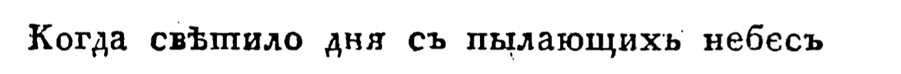
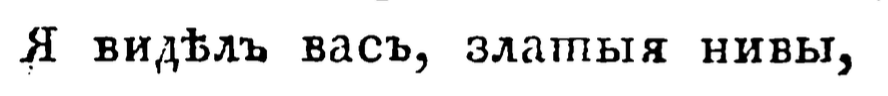
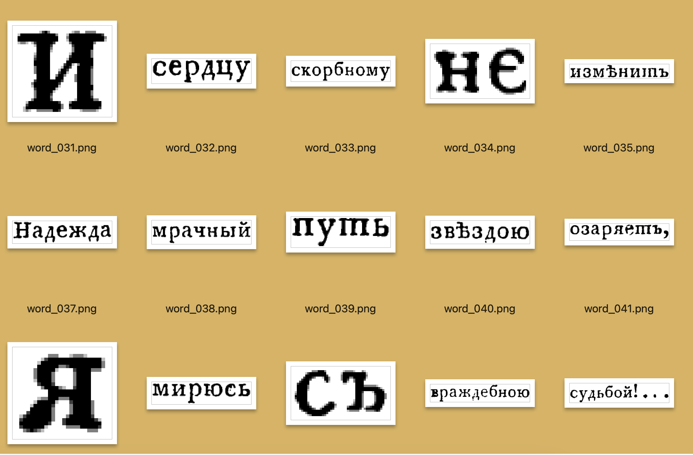

library(qpdf)
my_files <- list.files("../ocr", pattern = "pdf", full.names = TRUE)
my_files[1] "../ocr/recognize_my_pdf.py"
[2] "../ocr/Невский зритель. 1821. Ч. 6. № 6. Июнь.pdf"
[3] "../ocr/НЗ1821_6_6[50-51].pdf" В этом уроке мы освоим основной инструмент для распознавания печатного текста в R – пакет tesseract, а также научимся дообучать модели под конкретные задачи и шрифты.
CR (Optical Character Recognition) — это технология автоматического распознавания печатного текста на изображениях и преобразования его в машинно-читаемый формат. Эта технология позволяет “извлекать” текст из сканированных документов, фотографий, PDF-файлов и других графических форматов.
Tesseract — это одна из самых популярных библиотек OCR с открытым исходным кодом, разработанная компанией Google. Tesseract поддерживает более 100 языков и может работать с различными типами изображений и форматами документов.
Пакет tesseract в R представляет собой обертку для библиотеки Tesseract, которая позволяет:
В отличие от онлайн-сервисов OCR, пакет tesseract работает локально, что обеспечивает:
Однако качество распознавания сильно зависит от качества исходного изображения, типа шрифта, языка документа и правильности настройки параметров. Именно поэтому важно уметь не только использовать готовые модели, но и дообучать их под специфические задачи.
В качестве упражнения мы возьмем ч. 6 № 6 журнала “Невский зритель” за 1821 г. (источник).
Журнал «Невский зритель» издавался в Петербурге ежемесячно с января 1820 г. по июнь 1821 г. Всего вышло 18 книжек журнала, составивших 6 частей. Все они доступны на сайте “Пушкинского дома”.
Официальным издателем журнала был выпускник Московского университета Иван Матвеевич Сниткин (род. ок. 1792 г.). С января по апрель 1820 г. соиздателем «Невского зрителя» был В. К. Кюхельбекер; намеревался войти в число издателей и К. Ф. Рылеев (1797-1826), активный сотрудник журнала с октября 1820-го по февраль 1821 г.
В научной литературе не сложилось единого взгляда на идеологическую и литературно-критическую направленность журнала.
Разногласия в оценках объясняются противоречивостью статей, помещенных на страницах журнала за время его существования. Некоторые исследователи относят «Невский зритель» к кругу изданий декабристской ориентированности. «Невский зритель» оказался заметным явлением в журналистике 20-х гг. 19-го века, в нем печатались произведения Пушкина: стихотворения «Дориде» (№ 1. С. 96), «Дорида» (№ 2. С. 92), «Кюхельбекеру» («В последний раз, в сени уединенья»), «Прелестнице», «Мадригал М…ой» (все три: № 4. С. 66-68), отрывок из первой песни «Руслана и Людмилы», стихотворения Кюхельбекера, Жуковского, Баратынского, Дельвига, Рылеева, поместившего в октябрьской книжке 1820 г. острейшую сатиру на Аракчеева «К временщику».
Современные исследователи «Невского зрителя» выделяют два периода в эволюции журнала. Первый - январь-апрель 1820 г. Ведущий сотрудник в разделах «Литература» и «Критика» - Кюхельбекер; активно печатаются Пушкин, Баратынский, Дельвиг. Второй период - май-сентябрь 1820 г. Полностью прекращается сотрудничество с журналом всей группы молодых литераторов. Журнал наводняется эпигонскими произведениями Д. Хвостова, Ф. Синельникова, Г. П. Кругликова и М. А. Яковлева. В разделе «Критика» звучат громкие дифирамбы Хвостову. В этот же период появляется статья о «Руслане и Людмиле» с резкими нападками на поэму. (Источник описания.)
library(qpdf)
my_files <- list.files("../ocr", pattern = "pdf", full.names = TRUE)
my_files[1] "../ocr/recognize_my_pdf.py"
[2] "../ocr/Невский зритель. 1821. Ч. 6. № 6. Июнь.pdf"
[3] "../ocr/НЗ1821_6_6[50-51].pdf" pdf_subset(input = my_files[2],
output = "../ocr/НЗ1821_6_6[50-51].pdf",
pages = 50:51)[1] "/Users/olga/R_Workflow/philology_2025/ocr/НЗ1821_6_6[50-51].pdf"

Если вам повезло, то pdf хранит уже распознанный текст.
library(pdftools)Using poppler version 23.04.0library(tesseract)
text1 <- pdf_text(pdf = "../ocr/НЗ1821_6_6[50-51].pdf")
cat(text1)ЭЭСЮЭЭЭЭЭСКЮЭЭЭЭЭСЮС»ЭЭЭ<Э<ЗС>Э(ІЭ(99ЭС933 э о э з о з э з э
РАЗЛУКА.
( Э л е г і я ,)
Розалія, мой спутникъ неизмѣнный
На полѣ радостей земныхъ!
Розалія, мой другъ, хранитель несравненный!
Когда я отдохну въ объятіяхъ твоихъ? . •.
Съ тобою горестей душа моя незнаетъ,
И сердцу скорбному не измѣнитъ покой!
Надежда мрачный путь звѣздою озаряетъ,
И я мирюсь съ враждебною судьбой! . . •
Теперь, за дальними, свирѣпыми морями
Твой сладкій гласъ не оживитъ меня!
Взойдетъ заря надъ злачными холмами,
Появится въ лучахъ свѣтило дня —
Напрасно! все кругомъ покрыто мглою.
Неслышится мнѣ сладкій ігівой привѣтъ.
Всѣ радости, надежды всѣ съ тобою —
И опустѣлъ безъ милой свѣтъ!
Подруга милая, скажи, что край прелестный,
Что мирныя, тѣнисты я поля,
Что своенравныя судьбы привѣтъ мнѣ лестный,
Когда съ тобой въ разлукѣ я.
Но другъ мои! горесть отл етаетъ
243
На быстрыхъ времени крылахъ,
И радость сердце посѣщ аетъ. . . .
Моя надежда — въ небесахъ!. . .
Когдажъ опять смягченными судьбами
Я въ радости къ подругѣ понесусь,
Коснусь волшебныхъ струнъ волшебными пер
стами
И, съ рѣзвою мечтою примирюсь.
А, Б — фЪ.Текст распознан достаточно хорошо, есть мелкие ошибки, но их можно исправить (о чем речь пойдет в следующем уроке). Если необходимо сохранить извлеченный из pdf текст для дальнейшей работы, это делается так:
writeLines(text1, con = "../ocr/rosalia.txt")Если текст не распознан (притворимся, что так и есть), то можно попробовать распознать при помощи tesseract. Однако есть нюанс: tesseract не знает дореформенного русского. Это значит, что все яти (ѣ), еры (ъ), фита (Ѳ) и десятеричное и (і) превратятся во что-то другое. А еще трудности бывают с буквой “т”, т.к. в XIX в. ее печатали по-другому.
Проверим. Но прежде всего, надо скачать модель для русского языка. Это делается один раз. Кстати, тессеракт способен “читать” тексты на нескольких языках, для этого передаем значение аргументу language так: “rus+deu”.
# tesseract_download("rus")
text2 <- pdf_ocr_text("../ocr/НЗ1821_6_6[50-51].pdf", language = "rus")Converting page 1 to НЗ1821_6_6[50-51]_1.png... done!
Converting page 2 to НЗ1821_6_6[50-51]_2.png... done!cat(text2)999939993993999999339993399999939939 9039303939
РАЗЛУКА.
(Элегтя.)
————-
Розамя, мой спушникъь неизмённый
На полЪ радосшей земныхь!
Розал!я, мой другь, хранишель несравненный!
Когда я ошдохну въ объяпияхь швоихъ?...
Съ шобою горестей душа моя незнаеть,
И сердцу скорбному не измЪнить покой!
Надежда мрачный пушь звЪздою озаряепть,
И я мирюсь съ враждебною судьбой!...
’Геперь, за дальними, свиофпыми морями
Твой сладк!й гласъ не оживишьъ меня!
Взойдеть заря надъ злачными холмами,
Появишся въ лучахъ свЪшило дня —
Напрасно! все кругомъ покрыпю мглою.
Неслышишся мнЪ сладюй тивой привЪфить,
ВсЪ5 радосши, надежды всЪ съ шобою —
И опусш$ль безъ милой свЪзить’
Подруга милая, скажи, чшо край прелесшный,
Чпо мирвыя, тифвисптыя поля,
Чтпо своенравныя судьбы привЪтьъ мн лесшный,
Когда съ шобой въ разлук я.
Но другь мой! горесмь ошленаепть
245
На бысшрыхь времени крылахь,
И радосшь сердце посфщаеть....
Моя надежда — въ небесахь!...
Когдажъ опяшь смягченными судьбами
Я въ радосши къ подругЪ понесусь,
Коснусь волшебныхь сшрунь волшебными пер-
сшами
И, сь рфзвою мечтшою примирюсь.
Я, Б — $5.Что в таких случаях делать?
Первое: проверить, нет ли обученных моделей, которые справятся с вашей задачей. Я попробовала, например, модель для распознавания дореформенной орфографии с Hugging Face, но результат оказался очень печальным, я даже не буду его показывать. Это может быть связано с тем, что шрифт в нашем журнале отличается от тех, на которых учили модель.
Обученные модели можно также поискать в Транскрибусе (например, здесь и здесь). Чтобы воспользоваться готовыми приложениями для распознавания шрифта, pdf надо преобразовать в картинку. Попробуйте.
pdf_convert("../ocr/НЗ1821_6_6[50-51].pdf",
format = "png",
dpi = 300,
pages = NULL, # все страницы, или c(1,3,5) для конкретных
filenames = NULL)Converting page 1 to НЗ1821_6_6[50-51]_1.png... done!
Converting page 2 to НЗ1821_6_6[50-51]_2.png... done![1] "НЗ1821_6_6[50-51]_1.png" "НЗ1821_6_6[50-51]_2.png"Результат неплохой, и для небольших проектов подойдет. Но у Транскрибуса есть ряд ограничений: модели нельзя использовать локально, расширенный функционал платный, и др.
Transkribus — платформа для оцифровки и распознавания текста на основе технологии HTR (Handwritten Text Recognition), которая позволяет обучать специальные модули (англ. models) распознавания текста. Обученные модули способны распознавать рукописные, машинописные и печатные документы на самых разных языках, в частности, на классическом сирийском — одном из главных языков восточного христианства. (Источник)
tesseract, как показано вот в этом примере.Начиная с версии 4, Tesseract использует нейронную сеть для распознавания текста, что позволяет дообучать модель для конкретных задач.
Для дообучения необходимы эталонные данные — фрагменты изображений с соответствующим им текстом.
Шаг 1: Подготовка изображений
Создайте папку с именем {язык}-ground-truth/ (например, orus-ground-truth/) и поместите туда скриншоты текста. Названия файлов могут быть любыми.
В моем случае – это все пять скриншотов, лучше сделать несколько десятков. Выглядят они так:
  NB: Более продвинутый подход к нарезке изображений см. здесь. Разрезать изображение на отдельные слова можно и в R – пример мы рассмотрим на занятии.
 Шаг 2: Использование пакета tesseractgt
Теперь для каждого изображения добавим текст (файлы в формате .gt.txt). Для ускорения процесса создания эталонных файлов можно использовать специальный пакет:
# install.packages("remotes")
remotes::install_github("arcruz0/tesseractgt")Using GitHub PAT from the git credential store.Skipping install of 'tesseractgt' from a github remote, the SHA1 (dc49152a) has not changed since last install.
Use `force = TRUE` to force installationДля создания таких файлов используем базовую модель.
library(tesseractgt)
create_gt_txt(
folder = "../ocr/orus-ground-truth",
extension = "png",
engine = tesseract::tesseract(language = "rus")
)Убедитесь, что файлы появились в директории.
Шаг 3: Корректировка текстовых файлов
Исправьте автоматически созданные файлы .gt.txt вручную:
correct_gt_txt()  Если не видно папки с изображениями, смените рабочую директорию.
Если не видно папки с изображениями, смените рабочую директорию.
tesstrain:git clone https://github.com/tesseract-ocr/tesstrain.git
cd tesstrain
make tesseract-langdatamv ~/location/alg-ground-truth datamake training MODEL_NAME=alg START_MODEL=eng FINETUNE_TYPE=ImpactНа этом этапе у меня возникли сложности из-за того, что не был установлен make, также пришлось добавить аргумент LANG_TYPE.
brew install make # для Mac
gmake training MODEL_NAME=orus START_MODEL=rus FINETUNE_TYPE=Impact LANG_TYPE=BothДообучение занимает несколько минут.
###Установка модели
Найдите системную папку Tesseract:
tesseract::tesseract_info()$datapath[1] "/Users/olga/Library/Application Support/tesseract5/tessdata/"Скопируйте сюда новую модель orus.traindata.
Проверьте доступные модели:
tesseract::tesseract_info()$available[1] "deu" "eng" "grc" "lat" "orus" "osd" "rus" "snum"После дообучения можно использовать новую модель:
text3 <- pdf_ocr_text("../ocr/НЗ1821_6_6[50-51].pdf", language = "orus")Converting page 1 to НЗ1821_6_6[50-51]_1.png... done!
Converting page 2 to НЗ1821_6_6[50-51]_2.png... done!cat(text3)птт395$900990300>9000093000ОВ9200080 900306080
РАЗЛУК @ЧД,.
(Эляегтля.)
——-————
Розамя, мой спутникъ неизмБнный
На пол& радостей земныхъ!
Розамя, мой другъ, хранишель несравненный!
Когда я отдохну въ объяпияхь тшвоихъ?...
Съ тобою горестей душа моя незнаетъ,
И сердцу скорбному не измЪнить покой!
Надежда мрачный путь звБздою озаряеть,
И я мирюсь съ враждебною судьбой!...
Теперь, за дальними, свиръпыми морями
Твой сладктй глась не оживишьъ меня!
Взойдеть заря надь злачными холмами,
Появится въ лучакъь свЪытило дня —
Напрасно! ксе кругомъ покрыто мглою.
Неслышится мнЪ сладкй тшвой привЪтьъ,
ВсЪ радости, надежды всЪ сь тобою —
И опустль безъ милой свЪътъ!
Подруга милая, скажи, что край прелестный,
Что мирныя, тФнистыя поля,
Что своенравныя судьбы привЪтъ мнЪ лестный,
Когда сь тобой въ разлукЪ я.
Но другь мой! горесть отлетаетьъ
242
На быстрыхъ времени крылахьъ,
И радость сердце посвбщаеть...,
Моя надежда — въ небесахь!...
Когдажь опять смятченными судьбами
Я въ радости къ подругЪ понесусь,
Коснусь волшебныхъь струнь волшебными пер-
стами
И, сь рБзвою мечтою примирюсь.
А., Б — фё.Таким образом, дообучение Tesseract позволяет улучшить качество распознавания специализированных текстов; для лучшего результата используйте больше обучающих данных (чем больше, тем лучше). Пакет tesseractgt существенно упрощает процесс подготовки обучающих данных.